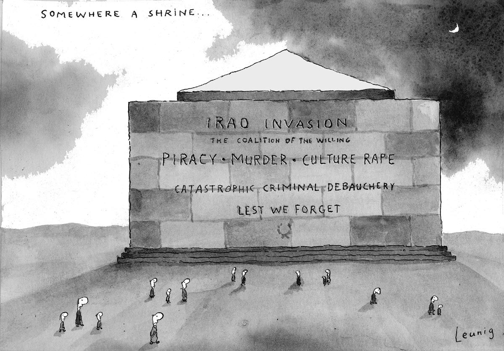
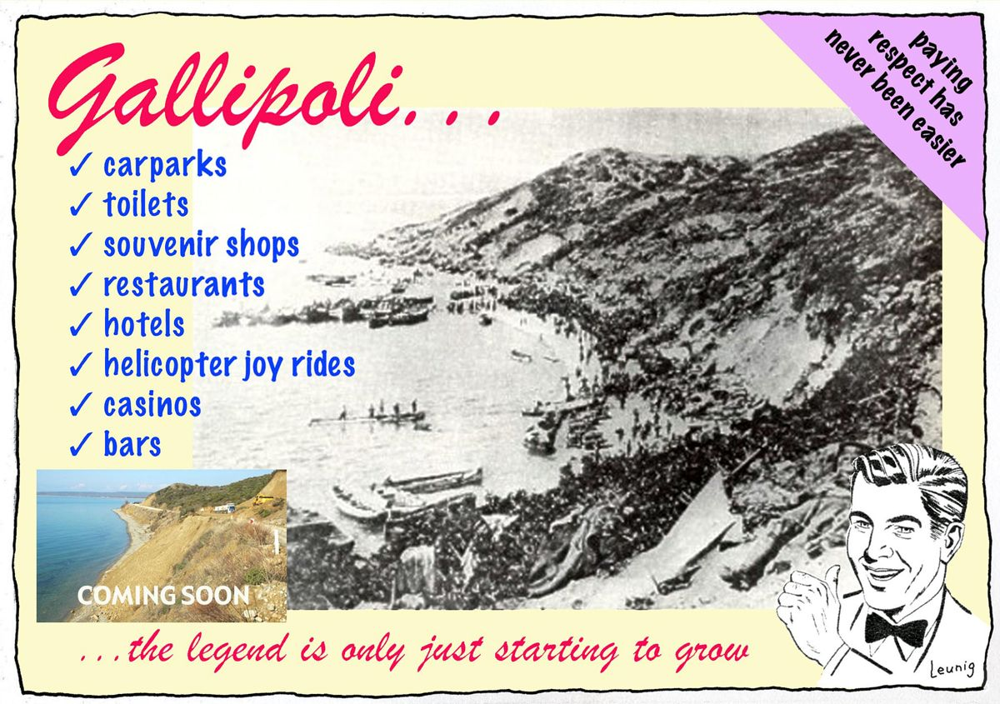

We're nothing here at Club Pony if we're not banging on about the Issue of the Day and the Issue of the Day is Anzac Day. Owing to continuing flatlining in Troppo's celebrity endorsement and themed fluffy toy revenue and the Troppo elves striking for the right to learn to read (next they'll be wanting toilet breaks), below the fold I've hoisted a post from three years ago singing the praises of Testament of Youth, the movie.Otherwise I have two random offerings. One is that I've watched the first two episodes of the BBC five part series Testament of Youth and really like it. I loved the movie and, as I explained, Alicia Vikander's uncanny unBritishness with a British accent, but the BBC series shows how it can be made very British and yet rise to the high mindedness of Vera Britain and her circle. I think it also captures the way the characters are trapped in the agonising unknowing of the unfolding present more compellingly than the film.
https://www.youtube.com/watch?v=NUaNuP82y3M
The other thing I wanted to comment on was the one-dimensionality of Anzac Day. I love the sombre pathos of Anzac Day. I think the mood is exactly right. As far from triumphalism as any national celebration of its kind I imagine. But it beats me why we can't augment that with greater emotional and social depth and use the day to commemorate all suffering of war, the futility of so much of our military involvement and of course the question of the inclusion of other voices in the narrative. The life-long trauma of so many who served, the horrors of the frontier wars.
When I reflect on the politics of this with my current preoccupation with the polarising effect of electoral democracy I wonder if we mightn't achieve a more thoughtful more broadly compassionate approach through mechanisms in which the participants weren't competing to divide and conquer.
As an aside, since John Walker suggested I visit an exhibition of WWI recruitment posters at the National Portrait Gallery, I've forever come to think of WWI as the great watershed between a more innocent age in which we were left largely to our own psychological devices and the age we live in now in which our sentiments are relentlessly manipulated by those in charge.
"Women of Britain say go". "Daddy, what did you do in the war?".
How DARE they!

https://youtu.be/e3e2nNNJ7-4
Regular readers will know of my enthusiasm for the recent movie adaptation of Vera Brittain's Testament of Youth about the disaster that was WWI and how it blighted the lives of a generation. It's opening in Australia today - read my review on the link above and go and see it if you can.
A month or so ago I was in the bookshop of the NSW State Library and flicked through a marvellous fat book of war poetry - in Penguin's new very cheap collection of books in old original Penguin covers - in this case the beigy-puce colour which seems to have been set aside for war literature. In it I read a remarkable poem. But before setting it out, I also read - I think later on on the net - a poem by Rupert Brooke: he of "If I should die think only this of me, that there is some corner of a foreign field that is forever England".
Here is the poem "Peace".
Now, God be thanked who has matched us with his hour,And caught our youth, and wakened us from sleeping!With hand made sure, clear eye, and sharpened power,To turn, as swimmers into cleanness leaping,Glad from a world grown old and cold and weary;Leave the sick hearts that honor could not move,And half-men, and their dirty songs and dreary,And all the little emptiness of love!Oh! we, who have known shame, we have found release there,Where there’s no ill, no grief, but sleep has mending,Naught broken save this body, lost but breath;Nothing to shake the laughing heart’s long peace there,But only agony, and that has ending;And the worst friend and enemy is but Death.
Brooke is suggesting that the crucible of war might make essences visible to our jaded ordinary selves otherwise tangled up in the mundane surface appearances of everyday life. The poem I read in the Penguin anthology contains the very same idea as Brooke's - that there's a surface reality and then a deeper one beneath it. But their treatment of this 'reality exposed by war' theme is diametrically opposed. In "To A Conscript of 1940" the poet and WWI veteran Herbert Read suggests that reality lying beneath the surface is altogether different. His message is not so dissimilar to that of Vera Brittain. That the worthiness of pre-war aspirations were a mirage, not just a trap, but a trap for those of good heart but without their wits about them - the wits that Vera Brittain slowly come to through experience.
A soldier passed me in the freshly fallen snow,
His footsteps muffled, his face unearthly grey:
And my heart gave a sudden leap
As I gazed on a ghost of five-and-twenty years ago.
I shouted Halt! and my voice had the old accustom'd ring
And he obeyed it as it was obeyed
In the shrouded days when I too was one
Into the unknown. He turned towards me and I said:
`I am one of those who went before you
Five-and-twenty years ago: one of the many who never returned,
Of the many who returned and yet were dead.
We went where you are going, into the rain and the mud:
We fought as you will fight
With death and darkness and despair;
We gave what you will give-our brains and our blood.
We think we gave in vain. The world was not renewed.
There was hope in the homestead and anger in the streets,
But the old world was restored and we returned
To the dreary field and workshop, and the immemorial feud
Of rich and poor. Our victory was our defeat.
Power was retained where power had been misused
And youth was left to sweep away
The ashes that the fires had strewn beneath our feet.
But one thing we learned: there is no glory in the dead
Until the soldier wears a badge of tarnish'd braid;
There are heroes who have heard the rally and have seen
The glitter of garland round their head.
Theirs is the hollow victory. They are deceived.
But you my brother and my ghost, if you can go
Knowing that there is no reward, no certain use
In all your sacrifice, then honour is reprieved.
To fight without hope is to fight with grace,
The self reconstructed, the false heart repaired.'
Then I turned with a smile, and he answered my salute
As he stood against the fretted hedge, which was like white lace.
In fact Testimony of Youth's Australian release coincides with the centenary of another event. Already the feted poet of the British War effort, Rupert Brooke died on April 23, 1915. In sad contradistinction to the ardour of his poetry, he never saw a shot fired in anger, dying of sepsis from an infected mosquito bite on a French ship, moored at Skyros, a Greek island in the Ionian sea a good way off from the looming battle for the Dardanelles.
And just as I mentioned John Maynard Keynes in the thick of things in the previous post about the film, the contrast between these two poems puts me in mind of something that Keynes said that stuck with me the moment I read it. Writing to a friend in 1943 - back at the Treasury as he had been in WWI while Vera Brittain's friends and brother were being blown to pieces - he wrote this to a colleague:
Here I am back again in the Treasury like a recurring decimal – but with one great difference. In 1918 most people’s only idea was to get back to pre-1914. No-one today feels like that about 1939. That will make an enormous difference when we get down to it.
And so it did. WWI, a four year catastrophe on a hitherto unimaginable scale killing 17 million people or whatever it was wasn't enough to make people really want to try hard to avoid the problems of the past. It turned out that it required a lot more than that. It required that, followed by the desperation of depression and then another world war of a far larger magnitude to get people to really want to get things right for a new generation.
And that's the situation we're in all over again. Deep in the grip of VerySeriousPersononomics, with a banking system that, having destroyed the prosperity of a generation, snaffled itself a couple of trillion dollars to pay its uberlords for their continuing fine work at the helm and is now reformed in a sufficiently mild way that it will happen again once the memories fade. I keep thinking of W. H. Auden lamenting that "low dishonest decade" that had just steered his own world back into world war in Sept 1939.
Yes, there is the same feeling of impending doom and corruption around now as I imagine things would have felt in 1910. Nuclear weapons and the relative smallness of the societies where this feeling pervades make it hard to imagine the same solution to huge inequalities will be followed this time round. Something closer to civil wars, such as perhaps the break-up of the countries involved, will be the solution this time round.
I do have one beef with what you say about the period pre WWI:
"we were left largely to our own psychological devices and the age we live in now in which our sentiments are relentlessly manipulated by those in charge"
indeed, but that change is enormous progress: those who matter get manipulated. You wont see us trying to indoctrinate cows or foreign populations who dont vote for our institutions. The price of having political power for the masses is that the manipulation of the masses becomes the means of any interest group to have influence. So the relentless manipulation of our sentiments is a testament to the fact we still have power. A power feared by those in charge. As they should.
So yes, a slave can be innocent and left alone whilst a master must contend with all the attempts to influence him. Would you want to be a slave though?
There's a couple of books to mention that I'm sure you have read:
https://www.blackincbooks.com.au/books/anzacs-long-shadow
https://press.princeton.edu/titles/10921.html
There's a few general points to make about the role of ANZAC Day.
- Conscription ended in Australia in 1972. Unlike in the 50s, the majority of the Australian population have no direct experience of war. And apart from the aboriginal experience of invasion, Australia does not have a folk memory of war on its own ground (unlike continental Europe, Asia, etc).That's not a bad thing - but it does make any considered reflections on battle difficult. You might as well be talking to people about Mars.
- Since at least the 1980s, ANZAC Day has largely been about the creation of a historical narrative for the purposes of nation building. History first as tragedy, then as themepark. I don't see that changing. I'd like to see $50m spent on veterans' health rather than statues. But again, that requires a very different mindset to our current one.
“we were left largely to our own psychological devices and the age we live in now in which our sentiments are relentlessly manipulated by those in charge”
*Ahem* The Catholic Church...
"Something closer to civil wars, such as perhaps the break-up of the countries involved, will be the solution this time round."
What do you reckon to Walter Scheidel's take on this?